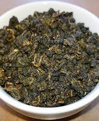

南方の茶故事

南方の茶故事
這杯南方茶，主要獻給每次偶然的相遇
茶，是中國人最喜歡的飲料。在親戚朋友拜訪時；在與朋友們談天論地時；在酒足飯飽時；哪怕在忙碌的工作時間，總會有一杯散發著清香的東西出現在你面前，這就是茶。
茶的味道十分奇妙，聞起來是有一股沁人心脾的清香，入口時確實苦澀，但又帶著一絲甘甜。不同品種的茶有不同的滋味不同的樣子，紅茶的茶葉細長，偏黑色，味道是澀，但並不是苦，碧螺春的葉子是綠油油的，蜷縮在一起，泡茶時就自然散開了，味道帶著一股春天的味道，香味令人神清氣爽，綠茶的樣子令人感到舒暢，喝起來的味道卻帶著澀澀的苦苦的，但是令人回味無窮。
茶不僅是健康的飲料，還蘊含著許多人生哲理。有一個成語叫做“一期一會”，就是在茶道之中悟出來的。日本大將井伊直弼詮釋一期一會的意思是：“一期一會提醒人們要珍惜每個人瞬間的機緣並，為人生中既有可能的一次相會，付出全部的心力，若因漫不經心輕忽了眼前所有，那會比擦身而過更為深刻的遺憾。”在泡茶時，要竭盡全力為眼前的每一個人泡好每一杯茶，不能感到絲毫厭煩，因為，這有可能是你一生中僅有可能的一次機會，或許，下一次坐在這裡的人，就不會是之前那個了，喝到的茶也不會是原來泡的那一杯，得到的感覺也不會一樣了。泡茶如此，做事情也不是一樣嗎？無論做什麼事情，都要付出全部的心血和努力，把事情做好，如果放棄了這次機會，就再也不會得到經驗和知識了
在喝茶時，務必要沉下心來，如果十分浮躁，耐不下性子來，就無法得到那種令人陶醉的清香。做事情也是這樣，要沉下心來，對待每一件事情都要沉著。茶的味道也給我們非常之大的其實，入口時苦澀，說明這是我們人生中必須經歷的苦難，挫折，只要靜下心來，細細品味，得到的就是讓人回味無窮的沁香，這就是經歷苦難過後的得到的勝利的果實。
這就是茶，普通的茶，不普通的意境：平凡中顯示出超俗，淡雅中不乏激情，他讓你清醒，也讓你更加清醒，也讓你更加從容。
茶中，品人生。
返回購物